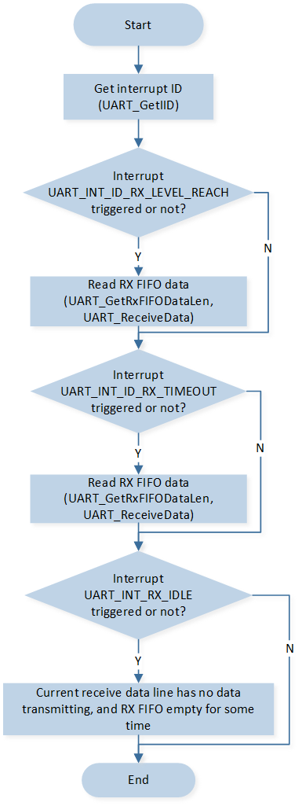

Receive Interrupt
This sample demonstrates using the UART interrupt method for data communication with a PC terminal.
Use a PC terminal program (such as PUTTY or UartAssist) to send data. When the SoC receives the data, it triggers a UART interrupt.
In the UART interrupt handler, the received data is stored in a buffer during the UART_INT_RD_AVA interrupt, and the received_flag is set during the UART_INT_RX_IDLE interrupt to indicate the reception is complete.
Once the received_flag is set, the SoC sends the buffered data back to the PC terminal, where the data response from the SoC can be observed in the PC terminal program.
Requirements
For requirements, please refer to the Requirements.
In addition, it is necessary to install serial port assistant tools such as PuTTY or UartAssist on the PC terminal.
Wiring
Connect P3_0(UART TX Pin) to the RX pin of the FT232 and P3_1(UART RX Pin) to the TX pin of the FT232.
Configurations
The following macro can be configured to modify the pin definitions.
#define UART_TX_PIN P3_0 #define UART_RX_PIN P3_1
Building and Downloading
For building and downloading, please refer to the Building and Downloading.
Experimental Verification
Preparation Phase
Start a PC terminal like PuTTY or UartAssist and connect to the used COM port with the following UART settings:
Baud rate: 115200
8 data bits
1 stop bit
No parity
No hardware flow control
Testing Phase
After resetting the EVB, observe the log information as shown in the Debug Analyzer.
Start uart rx interrupt test!
SoC starts sending
### Uart interrupt sample ###\r\n. Observe that the string appears on the PC terminal.Enter a string on the PC terminal and send it to the SoC. After receiving the data, the SoC will reply with the same data to the PC. Observe whether the same string appears on the PC terminal, and the Debug Analyzer tool will display the received data and interrupt information.
Code Overview
This section introduces the code and process description for initialization and corresponding function implementation in the sample.
Source Code Directory
The directory for project file and source code are as follows:
Project directory:
sdk\samples\peripheral\uart\rx_interrupt\projSource code directory:
sdk\samples\peripheral\uart\rx_interrupt\src
Initialization
The initialization flow for peripherals can refer to Initialization Flow in General Introduction.
Call
Pad_Config()andPinmux_Config()to configure the PAD and PINMUX of the corresponding pins.void board_uart_init(void) { Pad_Config(UART_TX_PIN, PAD_PINMUX_MODE, PAD_IS_PWRON, PAD_PULL_UP, PAD_OUT_DISABLE, PAD_OUT_HIGH); Pad_Config(UART_RX_PIN, PAD_PINMUX_MODE, PAD_IS_PWRON, PAD_PULL_UP, PAD_OUT_DISABLE, PAD_OUT_HIGH); Pinmux_Config(UART_TX_PIN, UART3_TX); Pinmux_Config(UART_RX_PIN, UART3_RX); }
Call
RCC_PeriphClockCmd()to enable the UART clock.Initialize the UART peripheral:
Define the
UART_InitTypeDeftypeUART_InitStruct, and callUART_StructInit()to pre-fillUART_InitStructwith default values.Modify the
UART_InitStructparameters as needed. The UART initialization parameter configuration is shown in the table below.Call
UART_Init()to initialize the UART peripheral.
UART Hardware Parameters |
Setting in the |
UART |
|---|---|---|
UART Baudrate Parameter - div |
|
|
UART Baudrate Parameter - ovsr |
|
|
UART Baudrate Parameter - ovsr_adj |
|
|
Rx Threshold |
14 |
|
IDLE Time |
Configure UART receive interrupt
UART_INT_RD_AVAand UART receive idle interruptUART_INT_RX_IDLE, and configure the NVIC. For NVIC-related configuration, refer to Interrupt Configuration.
Functional Implementation
The flow of UART receive data through interrupt is shown in the diagram:
{kind=link}

UART receive data through interrupt flow
Execute
uart_senddata_continuousto send### Uart interrupt sample ###\r\nto the PC terminal. Within the functionuart_senddata_continuous, wait for the UART TX FIFO to be empty, and then fill the data into the FIFO in batches.void uart_senddata_continuous(UART_TypeDef *UARTx, const uint8_t *pSend_Buf, uint16_t vCount) { uint8_t count; while (vCount / UART_TX_FIFO_SIZE > 0) { while (UART_GetFlagStatus(UARTx, UART_FLAG_TX_FIFO_EMPTY) == 0); for (count = UART_TX_FIFO_SIZE; count > 0; count--) { UARTx->UART_RBR_THR = *pSend_Buf++; } vCount -= UART_TX_FIFO_SIZE; } while (UART_GetFlagStatus(UARTx, UART_FLAG_TX_FIFO_EMPTY) == 0); while (vCount--) { UARTx->UART_RBR_THR = *pSend_Buf++; } }
After the PC terminal sends a string, the SoC will trigger a UART interrupt upon detecting the received data. Different types of interrupts will be triggered depending on the length of the data sent by the PC terminal.
If the data length sent by the PC terminal exceeds the set threshold, the SoC will first trigger the
UART_INT_ID_RX_LEVEL_REACHinterrupt. Within the interrupt,UART_GetRxFIFODataLen()andUART_ReceiveData()are called to receive the data and save it toUART_Recv_Buf.If the data length sent by the PC terminal is less than the set threshold, and the SoC detects data in the RX FIFO but no new data is added to the RX FIFO for a period of time, it will trigger the
UART_INT_ID_RX_DATA_TIMEOUTinterrupt. Within the interrupt,UART_GetRxFIFODataLen()andUART_ReceiveData()are called to receive the data and save it toUART_Recv_Buf.
Note
The time required to trigger the UART_INT_ID_RX_DATA_TIMEOUT interrupt is equivalent to the time for 4 characters. At a baud rate of 115200, the time for one character is 1/112500 * (1+8+0+1) = 86.8us. Character = start bit + data bits + parity bit + stop bits.
If the RX FIFO is empty and no data is received for a period of time, the
UART_FLAG_RX_IDLEinterrupt is triggered. Within the interrupt function, set thereceive_flagflag totrue.void UART_HANDLER() { uint16_t lenth = 0; uint32_t int_status = UART_GetIID(UART_DEMO); UART_INTConfig(UART_DEMO, UART_INT_RD_AVA, DISABLE); if (UART_GetFlagStatus(UART_DEMO, UART_FLAG_RX_IDLE) == SET) { DBG_DIRECT("UART_FLAG_RX_IDLE"); UART_INTConfig(UART_DEMO, UART_INT_RX_IDLE, DISABLE); UART_ClearRxFIFO(UART_DEMO); UART_INTConfig(UART_DEMO, UART_INT_RX_IDLE, ENABLE); receive_flag = true; } switch (int_status & 0x0E) { case UART_INT_ID_RX_DATA_TIMEOUT: { DBG_DIRECT("UART_INT_ID_RX_TMEOUT"); lenth = UART_GetRxFIFODataLen(UART_DEMO); UART_ReceiveData(UART_DEMO, UART_Recv_Buf, lenth); for (uint8_t i = 0; i < lenth; i++) { DBG_DIRECT("data=0x%x", UART_Recv_Buf[i]); UART_Send_Buf[UART_Recv_Buf_Lenth + i] = UART_Recv_Buf[i]; } UART_Recv_Buf_Lenth += lenth; break; } case UART_INT_ID_LINE_STATUS: break; case UART_INT_ID_RX_LEVEL_REACH: { DBG_DIRECT("UART_INT_ID_RX_LEVEL_REACH"); lenth = UART_GetRxFIFODataLen(UART_DEMO); UART_ReceiveData(UART_DEMO, UART_Recv_Buf, lenth); for (uint8_t i = 0; i < lenth; i++) { DBG_DIRECT("data=0x%x", UART_Recv_Buf[i]); UART_Send_Buf[UART_Recv_Buf_Lenth + i] = UART_Recv_Buf[i]; } UART_Recv_Buf_Lenth += lenth; break; } case UART_INT_ID_TX_EMPTY: break; default: break; } UART_INTConfig(UART_DEMO, UART_INT_RD_AVA, ENABLE); }
Continuously check the status of
receive_flag. When it is found thatreceive_flagis set totrue, it indicates that the UART reception is complete. Calluart_senddata_continuousto send the received dataUART_Recv_Bufback to the PC terminal.while (1) { if (receive_flag == true) { receive_flag = false; uart_senddata_continuous(UART_DEMO, UART_Send_Buf, UART_Recv_Buf_Lenth); for (uint16_t i = 0; i < UART_Recv_Buf_Lenth; i++) { UART_Recv_Buf[i] = 0; } UART_Recv_Buf_Lenth = 0; } }
See Also
Please refer to the relevant API Reference: